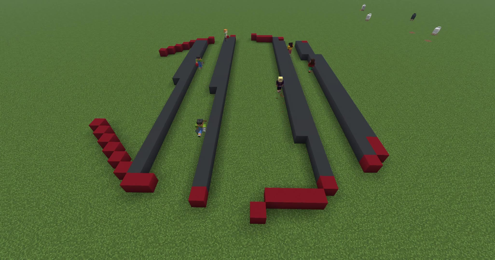
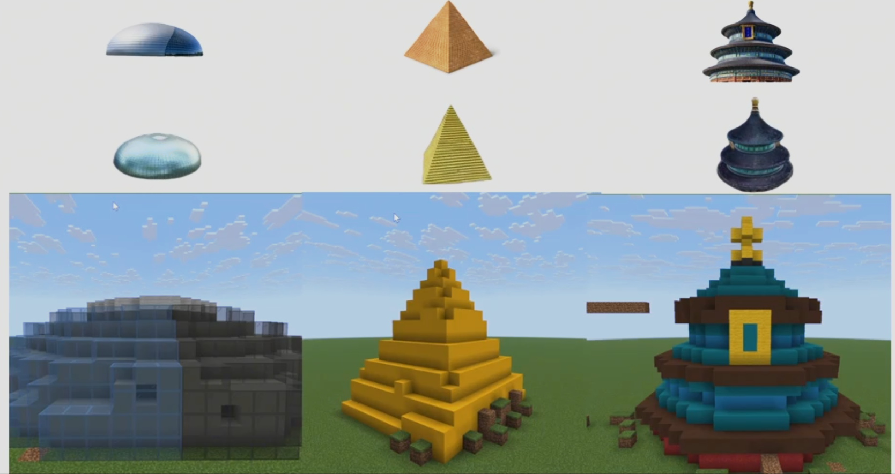
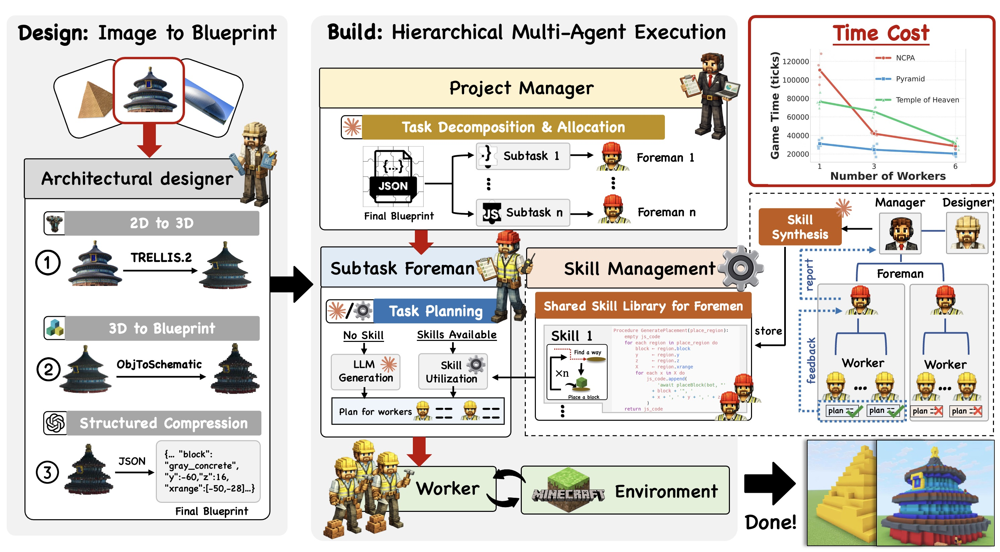

CraftUtopia
Demo Gallery

01 100-Agent Build Runtime Live timeline, framework pauses, milestones, tools, and skills.
02 Image to Blueprint Convert visual intent into buildable Minecraft regions.
03 Architecture Overview ProjectManager, Foremen, Workers, tools, and shared skills. 04
Blueprint Splitting
PM splits the blueprint into subtask streams for five Foremen.
04
Blueprint Splitting
PM splits the blueprint into subtask streams for five Foremen.
 05
Foreman Coordination
Five logical Foremen coordinate one hundred Workers.
05
Foreman Coordination
Five logical Foremen coordinate one hundred Workers.
 06
Worker Execution
Read subtasks, generate scripts, run, verify, and repair.
06
Worker Execution
Read subtasks, generate scripts, run, verify, and repair.
 07
Skill Learning
Repeated tool workflows become Build, Scaffold, Replace, and Clean skills.
07
Skill Learning
Repeated tool workflows become Build, Scaffold, Replace, and Clean skills.
 08
Final Cleanup
Verify the final structure and close the Minecraft environment.
08
Final Cleanup
Verify the final structure and close the Minecraft environment.